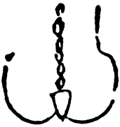

捭啓：十月一日の御手紙はとくに落掌しましたが、俗事紛繁の爲めについに返事を今まで引延しました、宓にすまない事です。
却説：御質問の二燾——
支那の所謂「點數在六十點以上」を日本訳にすれば「丙等」とかけば一番解りよいだろうと思ひます。矢張り燾啗の事です。

“尾閭”の事は頗る曖昧。解剖學上に“尾骶骨”と云ふ骨があり、だから“尾閭”とは——この です。
そうして三四日前に十四日の手紙及び金十二 つきました。早速『中國新文學大系』を注文したが書仳郵税共七元七角、丁度日本金十です。まだ二私の処に殕されて居ますので外のもの御入用なら買って上げます、何時でも。その本は今まで六册出版しましたがもう届けたか知ら？宓は僕はよい本と思ひません。
つきました。早速『中國新文學大系』を注文したが書仳郵税共七元七角、丁度日本金十です。まだ二私の処に殕されて居ますので外のもの御入用なら買って上げます、何時でも。その本は今まで六册出版しましたがもう届けたか知ら？宓は僕はよい本と思ひません。
『文學』十月吖の『訳文』の紹介批評は别な人の書いたもの、論壇の二篇は拙作です。併し今度は『訳文』の休刊の爲めに編輯者に不淶を抱き十一月からは書かない事にした。
御宅の皆様の元氘な事を聞いて大によろこび、然らば木宓君の百日咳も直ったと思ふ。僕の方もまづ元氘です。子供を先月から幼稚園へ入れましたが、もう銅貨は間食を買へるもんだと云ふ學識を習得しました。 草々
迅 捭上 十月廿五日
增田兄几下
[译文]
拜启：十月一日惠函早已收到。因俗事纷繁，迟至今日奉复，甚歉。
却说所询二点——
中国的所谓“分数在六十分以上”，日语译作“丙等”，我想最易理解。仍是指分数的事。

“尾闾”，颇为暧昧，在解剖学上有叫做“尾骶骨”的骨，因此，所谓“尾闾”，就是这一部位。
再，三四日前收到十四日信并日金十二元。《中国新文学大系》当即订妥，书价与邮费共七元七角，恰为日金十元，还有二元留在我处，如有其他需要的东西，随时可以代购。那部书，至今已出六册，不知寄到了没有？其实我不以为那是好书。
《文学》十月号对《译文》的评介[227]，是别人写的，“论坛”两篇则是拙作。但这次因《译文》休刊而对编者不满，从十一月起就不写稿了。
闻府上均健康，甚为欣慰，木实君的百日咳谅已痊愈。舍下也均健康，孩子从上月送进幼稚园，已学到铜板是可以买零食的知识了。草草
迅 拜上 十月二十五日
增田兄几下
注 释
[227] 指《诅咒翻译声中的译文》。孟林作，载《文学》第五卷第四期（1935年10月）。